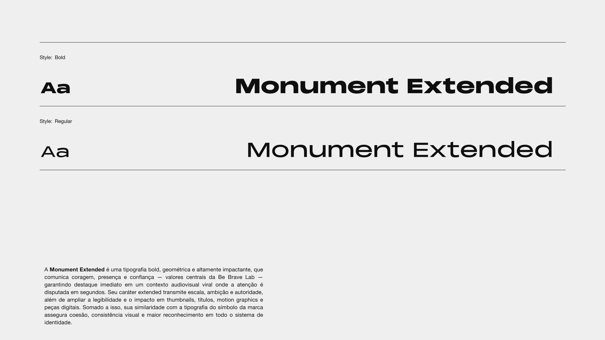

Be Brave Lab
Uma identidade com coragem de sobra para uma agência audiovisual que disputa atenção em segundos.
- Cliente
- Be Brave Lab
- Segmento
- Agência audiovisual
- Papel
- Design de marca
- Escopo
- Símbolo, identidade visual, tipografia e aplicações
Contexto e desafio
A Be Brave Lab é uma agência audiovisual que cria conteúdo para marcas e criadores num ambiente viral, onde a atenção é disputada em segundos. A marca precisava ser imediatamente reconhecível em thumbnails, vinhetas e redes, e comunicar coragem, presença e confiança.
Símbolo
O símbolo é construído sobre um grid de círculos e linhas paralelas. Duas formas espelhadas se encontram no centro e se abrem como asas, uma imagem de impulso e de quem avança sem pedir licença. A geometria rigorosa garante que ele funcione do ícone de perfil à animação 3D.


Tipografia
A Monument Extended é bold, geométrica e altamente impactante. Seu caráter extended transmite escala, ambição e autoridade, amplia o impacto em thumbnails, títulos e motion graphics e conversa com as formas do símbolo. A Helvetica Neue completa o sistema no texto corrido, com legibilidade e hierarquia clara.

Cor
O laranja é a assinatura da marca: energia e urgência. O azul profundo entra como contraponto, e o preto e o off-white sustentam o sistema com sobriedade.
Aplicações
A estética audiovisual entra na própria linguagem gráfica: fotos com movimento tratadas em halftone e dither, retículas em laranja e azul, e o símbolo ocupando superfícies inteiras.